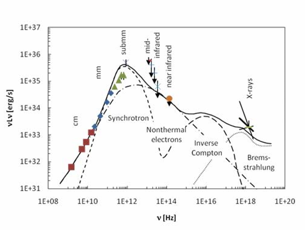

The Landscape signal is an audio signal that can be heard when pointing in the general direction of Sagittarius A* from the bubble. It gets its name from a distinctive structure visible in the spectogram that looks like a wireframe drawing of a mountain. Some commanders describe the sound as Space Whales.
Commander Serbanstein has provided a high fidelity recording.
Any original work on the signal by Canonn was lost when terrorists destroyed the Canonn servers in 3308. Fortunately the Independent Raxxla Hunters have conducted their own research. You can read their research notes here. The paper contains details of how to find the signal and the tools used to perform the analysis as well as a methodology for determining its origin. You can find additional discussion at the Pilots Federation forums
The signal can be heard from any part of the galaxy and its volume is not diminished by distance. The signal can still be heard up to 75° off centre. The signal repeats at roughly 1 minute 49.5 second intervals and includes various sections denoted by the structures visible with some parts repeating within a sub interval of that time. Based on the clip Commander Serbanstein has provided they are title: time stamp, as follows:
Lower tilted A: 25s
Tilted A: 31s
Mountain: 1m20s
Ridge: 1m23s
Tail: 1m28s
Upon Investigation it was discovered that the signal did not originate from Sagittarius A* but from a point in space where there were no systems some 12 light years away. The Pilot’s Federation were consulted to find out if perhaps it was an issue with telemetry but they reported that everything was working as designed.
Canonn’s commander Seventh_Circle performed his own measurements of the signal and concluded that it was within a 0.2 ly radius sphere at Galactic Coordinates 14.889 / -25.061 / 25894.980. Using 4 measurements that were closest in value, he narrowed it down further to 14.971 / -25.043 / 25894.964 with a radius of 0.075ly
The two closest systems are Stuemeae JM-W c1-5825 and Juenae AC-B d1-10264.
Seventh_Circle travelled in supercruise between Stuemeae JM-W c1-5825 and Juenae QS-L a7-42 hoping to discover the point where the signal is lost. The route between these two systems passes closest to the point of origin of the signal. However the direction of the signal did not change at any point during the journey even when the point had been passed.
Seventh Circle has produced a list of 2,858 hyperspace jumps that pass through the sphere where the point of origin is located. To date nothing untoward has been reported passing through the area. Seventh Circle completed a number of jumps himself but no attempt has been made to jump en-masse.
The origin of the system has been subject to intense speculation over the years but as of now there are no credible theories as to what might be causing it. Given the difficulty of navigating interstellar space where there are no stars to provide a solid frame reference, it is possible we will never find out. However we have ruled out that it is a signal from Sagittarius A* and that it is not an artifact of a software error.
Cmdr Pyroboros noted in the Pilots Federation forums that the position of the sound sources appears to be very close to the boxel coordinates 15,-25,25895. These are well within the margin of error for Seventh_Circles’ observations. It has been theorised that through some process unknown the sound may be originating from one of the 20,000 systems that share the boxel coordinate.
Our commanders have organised a survey of the systems to ensure that no body is unscanned and no stone unturned. The expedition is being tracked with this spreadheet.
Commander El Saico, scoured prior research looking for any information about the signal and discovered a 21st century paper that had a spectogram that appears to be a reasonably good match with the landscape signal if reversed.

If the landscape signal is a representation of this spectogram, then that would suggest that the Pilots Federation is mistaken and that there is an misalignment between the recorded location of the Landmark origin and the actual location which would be at Sagittarius A*
That paper does worryingly suggest that scanning 20,000 systems because of a miscommunication with the Pilots’ Federation is like the ultimate “This meeting could have been an email”.
CMDR Psyclapse Garp
Many thanks to commander Serbanstein and Seventh Circle for helping produce this article.